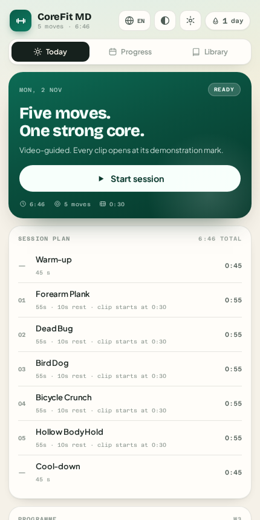
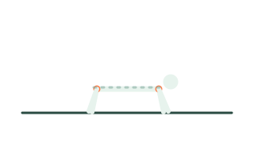

drsamonline · health tools
A morning core routine of five moves, guided by video. Every exercise clip opens at its 0:30 mark — the demonstration — and loops only inside that window, so a set never begins on an intro, a talking head or a sponsor read. No account, no server, no tracking.
Live demo
Four buttons below drive the real thing — the same build that ships in docs/play/.
Sessions and clips are stored in this browser only. Starting a workout inside this frame is fine, but open the app properly for sound and full-screen.

430 × 860 · the real build
Each exercise carries a clip window. The player starts at 0:30, re-seeks on ready, and a watchdog pulls it back if playback ever passes the window end — so fifty seconds of plank keeps showing the plank. If the clip is blocked, dead or you are offline, an animated figure takes its place.
Work intervals climb from 45 to 60 seconds with a deload in week four, driven by how many sessions you have actually logged. Warm-up and cool-down bracket every session.
History, streaks, clip windows and settings live in this browser. Export a JSON backup, print a one-page summary, or wipe it by clearing site data.
Every move ships an animated figure drawn for this app — a few kilobytes of SVG, no connection, no licensing problem.





These are original SVGs, not frames from the videos — the clips are other people's work and are only ever embedded, with the channel credited under the player and listed in the app's Sources and credits.
Why the first frame is the one that matters.
Most workout apps embed a video and press play. The clip begins with a channel ident, then a presenter explaining the move, then the movement — by which point you have lost fifteen seconds of a fifty-second set.
Here the clip window is data: start 0:30, end 0:55, editable per exercise. The player is created with that start, seeked again the moment it is ready, and re-seeked whenever playback passes the end. During each rest interval the next clip is preloaded, so the following set opens instantly.
If an embed is blocked, dead, or you are offline, the session still runs — an animated figure of the movement takes the video's place, the channel is still credited, and the timer never notices.
# any static server works git clone https://github.com/drsamonline/corefit-md cd corefit-md python3 -m http.server 8080 # then open localhost:8080/docs/ # the app alone, from disk: open docs/play/index.html # regenerate the assets in this repo python3 scripts/badges.py python3 scripts/figures.py bash scripts/shot.sh . app
docs/index.html this page
docs/play/ the app
index.html markup only
assets/css/app.css the design system
assets/js/ config · data · store
i18n · video · session
ui · main
assets/i18n/ en · hi · gu
assets/demo/ 10 animated SVG figures
sw.js offline shell
scripts/ badges and screenshots
BACKLOG.md what is next, and what is refused